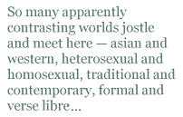

Equal to the Earth by Jee Leong Koh: Bench Press, 2009
It would be simplistic in the extreme to categorise Jee Leong Koh as a Gay poet, or an ethnic Chinese or Singaporean poet, or an Asian-American poet, or a poet in the English tradition, or a post-colonialist poet, or whatever. His work reflects all of these contexts and more, but also handsomely transcends them and amounts to an oeuvre greater than the sum of its contexts.
Some of the poems in this collection reflect a Chinese heritage and tradition, as in the ‘Hungry Ghosts’ sequence,where the subject matter ranges from pieces that could be translations of poems written in the Imperial Chinese court, such as ‘The Grand Historian Makes a Virtue of Necessity’ to the seventh in the sequence, the eponymous ‘Hungry Ghosts’ which juxtaposes a childhood visit to the terrors of the Tiger Balm Gardens in modern Singapore, to a walk ‘with a black dyke poet called / Venus’ in Connecticut, USA. What I have just pointed to here is merely a sample of the interculturality of this collection which impresses me as one of the dominant and most poignant flavours of the poetry. So many apparently contrasting worlds jostle and meet here — asian and western, heterosexual and homosexual, traditional and contemporary, formal and verse libre — and are held in balance by the tension of Jee Leong Koh’s art; this balancing produces a dynamic which generates impressive poetic power.
One of the contrasts that this collection presents for me is that between formal verse and free verse. Much of the verse is written in form — and I must pay tribute to the ingenuity of some of Jee Leong Koh’s rhymes: ‘gorilla’ answered by ‘...so real! Ah... ‘ and ‘volcano’ rhymed with ‘Mount Mikeno’ (‘Natural History’ from ‘Talk about New York’). Some of the poems placed later in the book are in Ferlinghetti-style stepped-and-spaced free verse, such as ‘Beach’ from the ‘Fire Island’ sequence. I must confess to something of a bias against free verse, yet I recognise the skill with which this poet handles it, and the fresh and original subject matter and imagery he represents in it. And even in a mostly free-verse sequence such as “Fire Island’, formal verse nevertheless constitutes an element of Jee Leong Koh’s pattern as well: the first and last poems in the set, for example, are written in tight formal stanzas, and the tension created by this framework to the vers libre of the other poems is effectively accomplished by such a confident but unconventional juxtaposition.
In these poems, so many of which are essentially love poems, Jee Leong Koh shows us that he is a poet who is in love with language. I previously mentioned the ingenious (but not forced) rhymes; Jee Leong Koh’s accomplished deployment of complex poetic form also attests to this verbal delight, as does the vigorous and wonderfully mimetic word and sound plays. In ‘Childhood Punishments’ he speaks mimetically of ‘the massive words I start, stutter and stop’; in ‘Ten Poems on the Plum Blossom’ he writes in boisterous word-play of a friend’s ‘coming out in a poetry slam’ that ‘I did not hear your pink-confession then / Now in New York I hear you loud and queer’.
Or how about ‘Here’s the American wearing his bible belt / below protuberant waist, his nonflammable flag / flying above him’ (‘Natural History’ from ‘Talk about New York’)? This lovely word-play, combined with a cartoonist’s sharp and satirical eye, produces a vivid and effective emblematic caricature. Jee Leong Koh’s wit runs like a flashing thread through his tightly woven material. One example, in ‘Glass Orgasm’ we contemplate a ‘handblown’ glass dildo which is ‘diswasher safe’, and which is available in various types of ribbing or studs, though ‘For Puritans, the glass also comes plain: for Quakers, terse’.
Yet these poems can be utterly serious too. They sometimes have gay themes, but never seek to present gayness in a strident or doctrinaire manner, or as some sort of partisan passport to authenticity: but rather as one more way of exploring the complex mystery of Love. Many of these poems are love poems of the highest order. Just a few poems away from the playful and witty satire of ‘Glass Orgasm’ there is the grave and tender metaphysical beauty of ‘For Lonely’:
Lying on top of you, my arms and knees
support my body even as I grope
for how much of me your frame will carry.
You hold me closer, you’re not heavy. So
I lean a ladder into you, step hard
up, and clamber to the top window
to hear you play Chopin’s Etude in C
Minor. I enter through the window, drop
into your room. I sit down quietly.
You come to a passage hazardous and slow
like footsteps on decaying floorboards
of an old house. The pedal mutes the piano.
Then I become afraid you will not be
playing, beside me, with such quiet hope
forever, for nightfall, for lonely,
and what that will do to me. I tiptoe
to the window while stroking your forehead,
lean back into myself, walk away below.
This and ‘Razminovenie , or Nonmeeting’, are to my mind the best poems in a rich and varied collection of very high quality poems. Read this book and you will partake of a nourishing array of diverse and rewarding poetic experiences delivered by a highly talented emerging poet of whom we will hear much more.